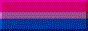
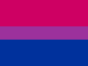
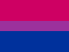

I'm Hannah, a 27-year-old Filipino-American. I had been pursuing an art degree, until I realized that I actually really dislike drawing for money! Now, I'm working towards a comp sci degree. When I'm not working on Lugaw.gay, I much prefer coding in Python.
I'm not a fan of talking about myself, so this website is mostly to display my interests and hobbies. You can already see a lot of my media interests by browsing the pages, but my other hobbies include building LEGO sets, reading sci-fi and horror.
 
 
 


Drawing on the left* commissioned from Strovi.
*Note that it's only visible on desktop.
Windows UI & Pride Flag Divider by M0OLKY.
Return Home